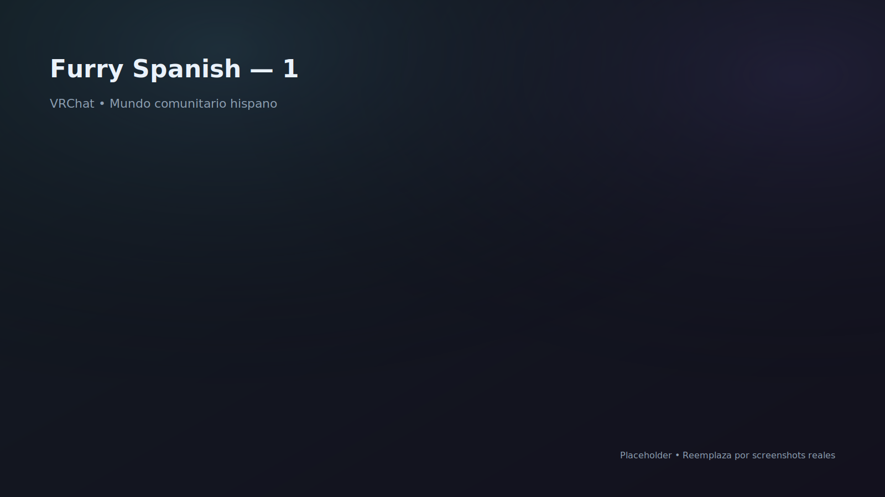

Furry Spanish
Mundo comunitario hispano. Aportes: assets, herramientas, sistemas de seguridad y mejoras de UX.
Página exclusiva para maximizar impacto: detalle por proyecto, carrusel de imágenes, aportes técnicos y sistemas implementados.
Recomendación: reemplaza los placeholders por screenshots reales. Si no tienes imágenes todavía, puedes subirlas después sin cambiar el layout.
Cada proyecto tiene su propia página con carrusel y sección de sistemas/código.
Mundo comunitario hispano. Aportes: assets, herramientas, sistemas de seguridad y mejoras de UX.
Optimización + audio direccional/oclusión + prototipos de shading (triplanar optimizado).
Exploración micro/macro con escalado; foco en consistencia de interacción y confort VR.

Mundo social para eventos privados. Sistemas: roles, reputación y control de acceso.

Mundo social cross‑platform con identidad “golden”, mantenido con updates y foco en consistencia.

Roles administrados vía web e integración con experiencia in-world.